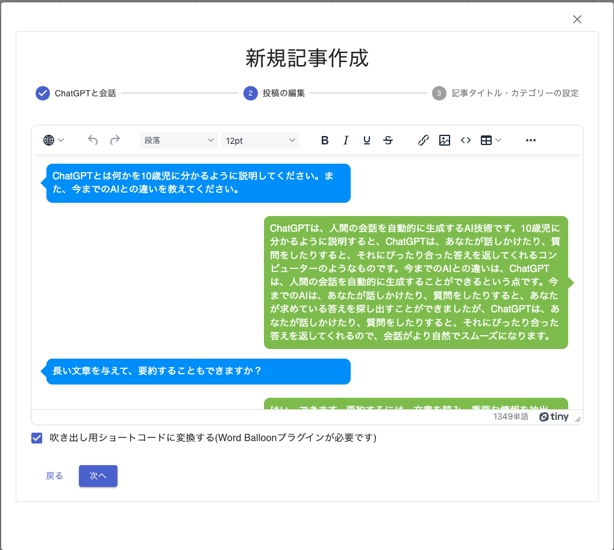
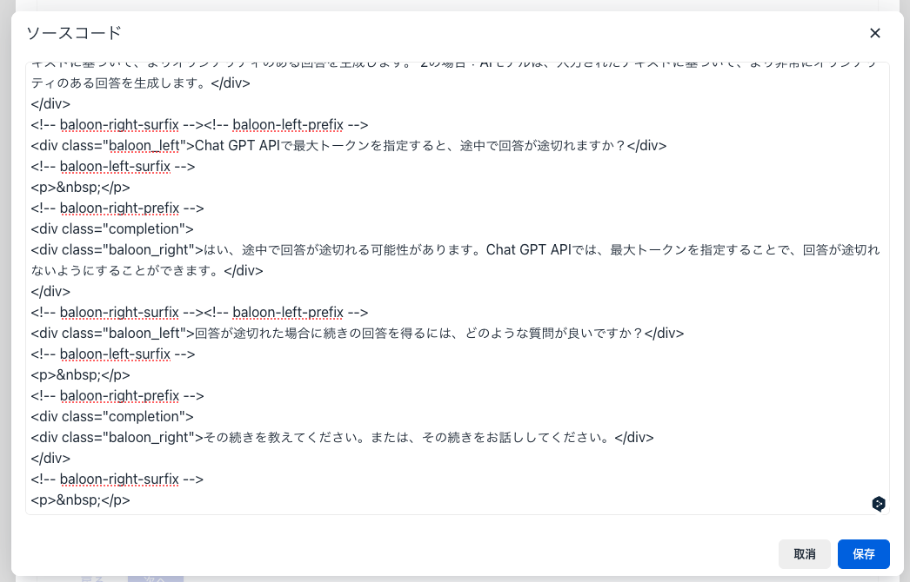
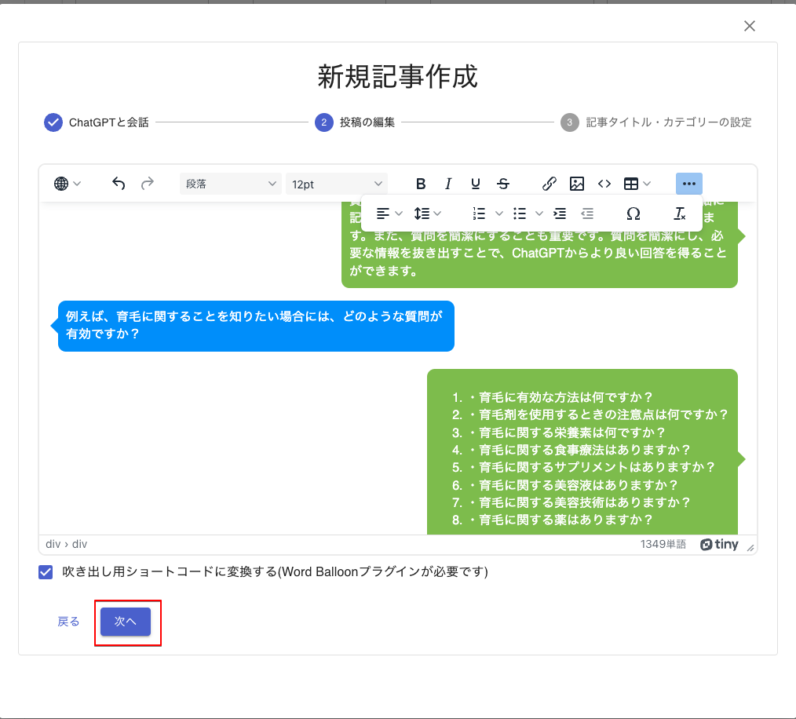

編集
ChatGPTとの会話がHTMLに変換し、HTML編集画面が開きます。

HTMLエディター
WordPressでグーテンベルク採用前までに使われていたHTMLエディターと同じように、 HTMLを編集できます。
- 見出し（h1〜h5タグ）
- フォントの大きさ
- 太字・斜体・アンダーライン・打ち消し線
- リンク
- 画像の挿入 (WordPressへのアップロードも行います。)
- テーブルの挿入
- 右寄せ・中央寄せ・左寄せ
など、たいていのことはできます。
吹き出し用ショートコード
準備編でインストールした「Word Balloon」用のショートコードを自動生成します。チェックを付けない場合には、段落（pタグ）に変換されます。
HTMLソースコード
ツールボタンの</>をクリックするとHTMLソースコードを表示しますが、編集はできません。

編集完了
編集が完了しましたら、「次へ」ボタンをクリックします。記事タイトルなどの設定画面に変わります。
